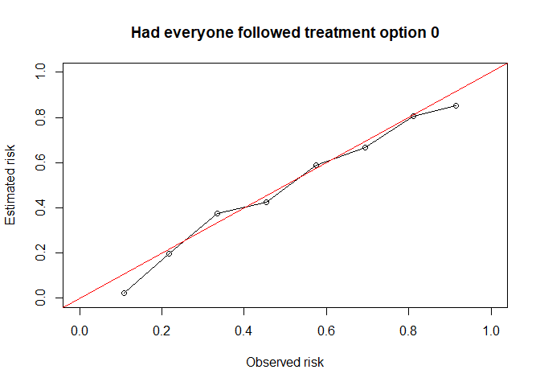

Prediction under interventions considers estimating what a subject’s risk would be if they were to receive a certain treatment. Likewise one may be interested in assessing predictive performance in a setting where all individuals were to receive a certain treatment. This is challenging, as only the outcome of the realized treatment level can be observed in the data, and outcomes under any treatment level are counterfactual.(Keogh, van Geloven, DOI 10.1097/EDE.0000000000001713). This R package facilitates assessing counterfactual predictive performance.
Installation
You can install the development version of CFeval from GitHub with:
# install.packages("devtools")
devtools::install_github("jvelumc/CFeval")Toy example
Simulate example data for binary outcome Y and (point) treatment A, with the relation between A and Y confounded by a variable L. Variable P is a prognostic variable for only the outcome. The treatment reduces the risk on a bad outcome (Y = 1) in this simulated example. The R package contains a 5000 row df_dev and a 4000 row df_val, both simulated as described.

library(CFeval)
simulate_data <- function(n) {
df <- data.frame(id = 1:n)
df$L <- rnorm(n)
df$A <- rbinom(n, 1, plogis(df$L))
df$P <- rnorm(n)
df$Y <- rbinom(n, 1, plogis(0.5 + df$L + 1.25 * df$P - 0.6*df$A))
return(df)
}
set.seed(123)
df_dev <- simulate_data(5000)
df_val <- simulate_data(4000)
head(df_dev)
#> id L A P Y
#> 1 1 -0.56047565 0 0.3500025 1
#> 2 2 -0.23017749 0 0.8144417 0
#> 3 3 1.55870831 0 -0.5166661 0
#> 4 4 0.07050839 1 -2.6922644 0
#> 5 5 0.12928774 1 -1.0969546 0
#> 6 6 1.71506499 1 -1.2554751 1We will use df_dev for model development. The independent df_val will be used to validate the model performance.
Fitting a logistic regression model on this data without accounting for the confounder L results in a model where treatment apparently increases the risk on the outcome
naive_model <- glm(Y ~ A + P, family = "binomial", data = df_dev)
summary(naive_model)
#>
#> Call:
#> glm(formula = Y ~ A + P, family = "binomial", data = df_dev)
#>
#> Coefficients:
#> Estimate Std. Error z value Pr(>|z|)
#> (Intercept) 0.11227 0.04483 2.504 0.01227 *
#> A 0.16547 0.06342 2.609 0.00908 **
#> P 1.09134 0.03862 28.257 < 2e-16 ***
#> ---
#> Signif. codes: 0 '***' 0.001 '**' 0.01 '*' 0.05 '.' 0.1 ' ' 1
#>
#> (Dispersion parameter for binomial family taken to be 1)
#>
#> Null deviance: 6903.5 on 4999 degrees of freedom
#> Residual deviance: 5819.2 on 4997 degrees of freedom
#> AIC: 5825.2
#>
#> Number of Fisher Scoring iterations: 4Fitting a model using IP-weighting to account for the confounder results in a model where treatment decreases the risk on the outcome, which we know to be true in our simulated data
propensity_model <- glm(A ~ L, family = "binomial", df_dev)
prop_score <- predict(propensity_model, type = "response")
prob_trt <- ifelse(df_dev$A == 1, prop_score, 1 - prop_score)
ipw <- 1 / prob_trt
causal_model <- glm(Y ~ A + P, family = "binomial", data = df_dev,
weights = ipw)
#> Warning in eval(family$initialize): non-integer #successes in a binomial glm!
summary(causal_model)
#>
#> Call:
#> glm(formula = Y ~ A + P, family = "binomial", data = df_dev,
#> weights = ipw)
#>
#> Coefficients:
#> Estimate Std. Error z value Pr(>|z|)
#> (Intercept) 0.43083 0.03207 13.44 <2e-16 ***
#> A -0.48505 0.04514 -10.75 <2e-16 ***
#> P 1.08065 0.02727 39.62 <2e-16 ***
#> ---
#> Signif. codes: 0 '***' 0.001 '**' 0.01 '*' 0.05 '.' 0.1 ' ' 1
#>
#> (Dispersion parameter for binomial family taken to be 1)
#>
#> Null deviance: 13798 on 4999 degrees of freedom
#> Residual deviance: 11602 on 4997 degrees of freedom
#> AIC: 11383
#>
#> Number of Fisher Scoring iterations: 4From now on we assume some model has been developed (be it a good or a bad one), and we want to know if it provides accurate estimates of the counterfactual risk on outcome under both treatment options a = 1 and a = 0.
This package aims to help the user in assessing how well the predictions would match the validation data if all individuals in the validation data had followed a certain treatment option of interest.
The main function CFscore() estimates several counterfactual performance measures in a validation dataset, printing the assumptions required along the way.
results_CF0 <- CFscore(
validation_data = df_val,
model = list("naive model" = naive_model, "causal model" = causal_model),
outcome_column = "Y",
propensity_formula = A ~ L,
treatment_of_interest = 0
)
results_CF0
#> Estimation of the performance of the prediction model in a
#> counterfactual (CF) dataset where everyone's treatment A was set to 0.
#> The following assumptions must be satisfied for correct inference:
#> - Conditional exchangeability requires that {L} are sufficient to
#> adjust for confounding and selection bias between treatment and
#> outcome.
#> - Positivity (assess $weights for outliers)
#> - Consistency
#> - No interference
#> - Correctly specified propensity formula
#>
#> model auc brier oe
#> null.model 0.500 0.244 1.000
#> naive model 0.741 0.204 1.115
#> causal model 0.741 0.201 0.994
#> model: null.model

 Weights are exported:
Weights are exported:
summary(results_CF0$ipweights)
#> Min. 1st Qu. Median Mean 3rd Qu. Max.
#> 1.018 1.336 1.645 1.999 2.192 22.353See also the counterfactual score under treatment option 1
results_CF1 <- CFscore(
validation_data = df_val,
model = list("naive model" = naive_model, "causal model" = causal_model),
outcome_column = "Y",
propensity_formula = A ~ L,
treatment_of_interest = 0,
quiet = TRUE
)
results_CF1
#>
#> model auc brier oe
#> null.model 0.500 0.244 1.000
#> naive model 0.741 0.204 1.115
#> causal model 0.741 0.201 0.994
#> model: null.model


Other options
Bootstrapping for 95% confidence intervals (95CI) - in this setting (sample size 4000, binary outcome and treatment, 1 confounder) takes about 30 seconds on my pc with 200 bootstrap iterations. Here we use 50 bootstraps to save time.
CFscore(
validation_data = df_val,
model = list("naive model" = naive_model, "causal model" = causal_model),
outcome_column = "Y",
propensity_formula = A ~ L,
treatment_of_interest = 0,
metrics = c("auc", "brier", "oe"),
bootstrap = TRUE,
bootstrap_iterations = 50,
quiet = TRUE
)
#> bootstrapping : 1 / 50 bootstrapping : 2 / 50 bootstrapping : 3 / 50 bootstrapping : 4 / 50 bootstrapping : 5 / 50 bootstrapping : 6 / 50 bootstrapping : 7 / 50 bootstrapping : 8 / 50 bootstrapping : 9 / 50 bootstrapping : 10 / 50 bootstrapping : 11 / 50 bootstrapping : 12 / 50 bootstrapping : 13 / 50 bootstrapping : 14 / 50 bootstrapping : 15 / 50 bootstrapping : 16 / 50 bootstrapping : 17 / 50 bootstrapping : 18 / 50 bootstrapping : 19 / 50 bootstrapping : 20 / 50 bootstrapping : 21 / 50 bootstrapping : 22 / 50 bootstrapping : 23 / 50 bootstrapping : 24 / 50 bootstrapping : 25 / 50 bootstrapping : 26 / 50 bootstrapping : 27 / 50 bootstrapping : 28 / 50 bootstrapping : 29 / 50 bootstrapping : 30 / 50 bootstrapping : 31 / 50 bootstrapping : 32 / 50 bootstrapping : 33 / 50 bootstrapping : 34 / 50 bootstrapping : 35 / 50 bootstrapping : 36 / 50 bootstrapping : 37 / 50 bootstrapping : 38 / 50 bootstrapping : 39 / 50 bootstrapping : 40 / 50 bootstrapping : 41 / 50 bootstrapping : 42 / 50 bootstrapping : 43 / 50 bootstrapping : 44 / 50 bootstrapping : 45 / 50 bootstrapping : 46 / 50 bootstrapping : 47 / 50 bootstrapping : 48 / 50 bootstrapping : 49 / 50 bootstrapping : 50 / 50
#>
#> auc
#>
#> model auc lower upper
#> null.model 0.500 0.500 0.500
#> naive model 0.741 0.723 0.764
#> causal model 0.741 0.723 0.764
#>
#> brier
#>
#> model brier lower upper
#> null.model 0.244 0.240 0.247
#> naive model 0.204 0.196 0.213
#> causal model 0.201 0.193 0.208
#>
#> oe
#>
#> model oe lower upper
#> null.model 1.000 0.968 1.03
#> naive model 1.115 1.078 1.16
#> causal model 0.994 0.962 1.03We can also give counterfactual predictions to CFscore, instead of models
# this is a bit stupid example, defining df_valA0 and then using df_val in CFscore. Makes more sense when you have complicated prediction, such as for time dependent confounding. Don't pay too much attention to this right now.
df_valA0 <- df_val
df_valA0$A <- 0
cf0 <- predict(causal_model, newdata = df_valA0, type = "response")
CFscore(
validation_data = df_val,
predictions = cf0,
outcome_column = "Y",
propensity_formula = A ~ L,
treatment_of_interest = 0,
metrics = c("auc", "brier", "oe"),
quiet = TRUE
)
#>
#> model auc brier oe
#> null.model 0.500 0.244 1.000
#> model.1 0.741 0.201 0.994And we can also give it user-specified weights, instead of a propensity formula.
prop_model <- glm(A ~ L, family = "binomial", data = df_val)
prop_score <- predict(prop_model, type = "response")
prob_trt <- ifelse(df_val$A == 1, prop_score, 1 - prop_score)
my_ip_weights <- 1 / prob_trt
CFscore(
validation_data = df_val,
predictions = cf0,
outcome_column = "Y",
ipweights = my_ip_weights,
treatment_column = "A", #need to specify treatment var, which is normally inferred from propensity formula
treatment_of_interest = 0,
metrics = c("auc", "brier", "oe"),
quiet = TRUE
)
#>
#> model auc brier oe
#> null.model 0.500 0.244 1.000
#> model.1 0.741 0.201 0.994